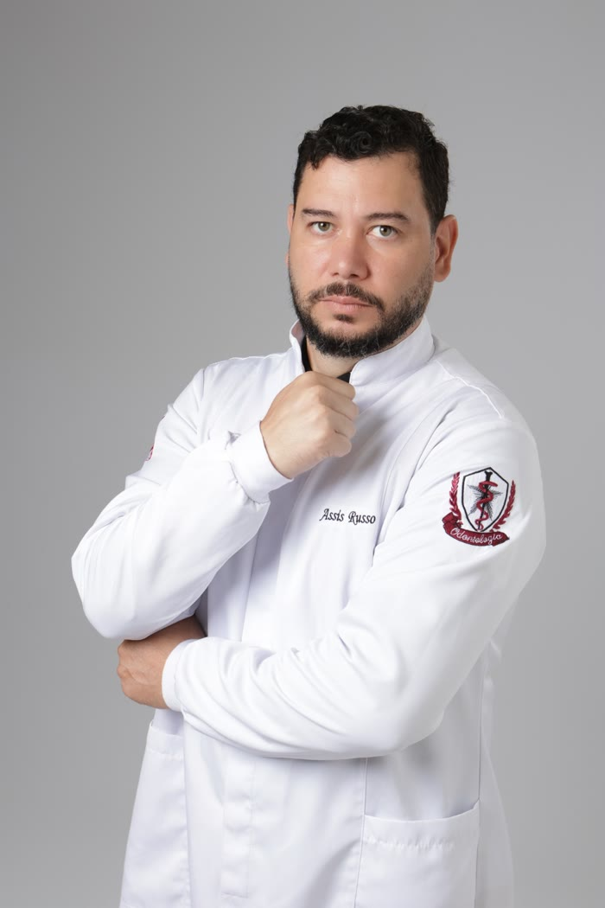

Dr. Assis Russo · Asa Sul, Brasília
Cirurgia de siso em Brasília, peça por peça.
Antes de operar, eu entendo cada parte do seu siso: a coroa, as raízes, o osso e o nervo logo abaixo.
Dr. Assis Russo · Asa Sul, Brasília
Antes de operar, eu entendo cada parte do seu siso: a coroa, as raízes, o osso e o nervo logo abaixo.
01 · O planejamento
Radiografia sempre e tomografia quando o siso está perto do nervo. Assim a cirurgia segue o que foi combinado.
02 · Do simples ao complexo
No consultório ou no centro cirúrgico, com dois retornos para acompanhar a cicatrização.
Primeiro eu entendo o que você sente. Na primeira consulta não tem cirurgia.
Atendimento individual e particular, sem consulta corrida.
Do siso que já nasceu ao incluso perto do nervo, com tomografia quando precisa.
Os 32 dentes
É assim que ele aparece no prontuário e na radiografia. Os sisos são o 18, o 28, o 38 e o 48. Passe o mouse ou toque em qualquer dente.
Direita do pacienteEm cima, os dentes de cimaEsquerda do paciente
Quando nasce torto, preso no osso ou sem espaço, causa dor, inflamação e empurra os vizinhos. A radiografia mostra se precisa sair.
Avaliar meus sisosVocê sabia?
Toque em cada cartão. Informação de acordo com a literatura de cirurgia bucomaxilofacial.

Quem vai cuidar de você
Sou o Dr. Assis Russo, cirurgião-dentista em Brasília. Atendo um paciente por vez, sem consulta corrida: primeiro eu escuto o que você sente, depois monto o plano.
Na residência atuo também no trauma de face, com fraturas e reconstrução. Essa bagagem me deixa preparado do siso simples ao caso complexo, e é com ela que decido com você se o procedimento é feito no consultório ou no centro cirúrgico.
Bagagem
Quem opera siso precisa estar pronto também para o caso difícil. Foi essa a formação que eu escolhi.
Clínica geral, extrações e prevenção: a base para cuidar da boca inteira.
Pela ACBDF, em Brasília, com rotina de centro cirúrgico e cirurgias todos os sábados.
Atuação no hospital de trauma de Altamira (PA): acidentes, quedas e reconstrução facial.
Atendimento individual na Asa Sul, com foco em cirurgia de siso, do caso simples ao complexo.
Tratamentos
Do siso que já nasceu ao incluso, preso no osso ou próximo do nervo. Cada caso é planejado com radiografia e, quando precisa, tomografia, e você decide comigo se a cirurgia é feita no consultório ou no centro cirúrgico.
Extração simples, de dente de leite, frenectomia e drenagem de abscesso.
Dor forte, inchaço ou dente quebrado: chame no WhatsApp e conte o que está sentindo.
Resina na cor do dente e tratamento para dente sensível ao gelado e ao doce.
Avaliação, limpeza, flúor e selante, de crianças e adultos.
Para gengiva que sangra ou inflama, e a manutenção depois do tratamento.
Centro cirúrgico
Escovação, paramentação e o centro cirúrgico preparado antes de cada procedimento. Toque numa foto para ampliar.
Dúvidas comuns
Não. Siso bem posicionado, com espaço e fácil de limpar pode ficar. A avaliação com radiografia mostra se o seu precisa sair. Se já existe capuz na gengiva e infecção, o ideal é tirar logo.
Durante o procedimento você está anestesiado. Depois, o desconforto é controlado com a medicação e os cuidados que eu passo por escrito.
Nem sempre. A radiografia panorâmica vem primeiro. Quando o siso está incluso ou perto do nervo, a tomografia mostra a posição dele em 3D e deixa a cirurgia mais segura.
Na maioria dos casos a cirurgia é feita com anestesia local, no consultório. A sedação é feita em centro cirúrgico, em hospital, quando o caso pede, e isso é decidido com você no planejamento.
Varia com cada caso. Na avaliação eu explico o que esperar nos primeiros dias e quando você volta à rotina. Depois da cirurgia são dois retornos: um para tirar os pontos e outro para avaliar a cicatrização.
Em muitos casos, sim. Depende da posição dos dentes e da sua saúde geral, e isso é definido no planejamento.
É comum: tirar o siso abre espaço para o tratamento ortodôntico. Me chame no WhatsApp com o pedido do seu ortodontista e a radiografia, se tiver, e a gente marca a avaliação.
O atendimento é particular. Na avaliação você recebe o plano e o valor antes de qualquer procedimento.
Avaliação
Chame no WhatsApp e marque a sua avaliação. O endereço da clínica na Asa Sul é confirmado no agendamento.
Chamar no WhatsApp